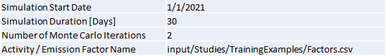
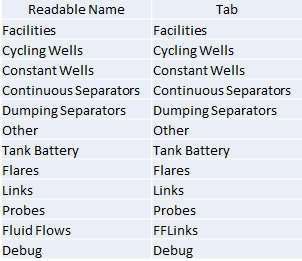

MEET Site Definition File
The site definition file defines all the parameters necessary to run a single simulation. It is a Microsoft Excel file, with a variable number of tabs per simulation. Two tabs are required for every site definition file:
- Global Simulation Parameters
The Global Simulation Parameters tab defines parameters controlling the simulation, and are read directly by the MEET simulation software.
- Simulation Start Date
Defines the start date of the simulation. Currently not used.
- Simulation Duration [Days]
Length of the simulation.
- Number of Monte Carlo Iterations
Number of MC iterations for the simulation. Can be overridden via command line arguments (-mc).
- Activity / Emission Factor Name
Name of the random factors file. If not set, will default to input/CuratedData/FactorsFileReference/Factors.csv

Global Simulation Parameters Tab
- Master Equipment
The Master Equipment tab defines the other tabs in the spreadsheet to be read to define equipment used in the model.
- Readable Name
Friendly name of the tab.
- Tab
Name of the tab to be read.

Master Equipment Tab
General Form of Equipment Tabs
Equipment tabs contain columns that fall into the following groups:
- Identification Columns
Identification columns define each individual piece of major equipment. They name the equipment, define how to model the behavior of the equipment, and define its location.
- Facility ID
Facility on which the equipment is located.
- Unit ID
Name of the equipment. The combination of Facility ID and Unit ID must be unique.
- Model ID
How the equipment is modelled. The value is the name of the file defining the model, see MEET Model Reference
- Latitiude, Longitude
Physical location of the equipment, if different than the facility definition. If not specified, use the latitude, longitude defined for the facility.
- Flow & Factor Columns
The Flow & Factor columns define how the equipment interacts with the Gas Composition files and the factor files.
- Flow Tag
Identifies which Gas Composition tag to use for emitters off of the equipment.
- Leak GC Name
Identifies which Gas Composition tag to use for leaks off of the equipment.
- Factor Tag
Index into Activity / Emission factor file for this equipment.
- Model Definition Fields
The remaining fields in the model definition tab are specific to the particular type of equipment. See the model definition documentation for the information on these columns.
Special Equipment Tabs
Certain equipment tabs have variations on the general form.
- Facility tabs
The facility tab defines general parameters for how the site behaves.
- Unit ID
There is no Unit ID column for the facility tab.
- Latitude, Longitude
The Latitude & Longitude tabs define default locations for equipment defined for the facility. These values can be overridden as required for sepecific equipment.
- Leak Gas Composition
Default value for gas compositions for leaks for equipment defined on the facility.
- Wells tabs
Well model definitions (CycledWell, ContinuousWell) define a gas composition for all gas produced by the well. This gas composition is carried in the Fluid Flows eminating from the well and are used for the processes defined in downstream equipment.
- FFLinks tabs
The FFLinks tabs define fluid flow relationships between equipment.